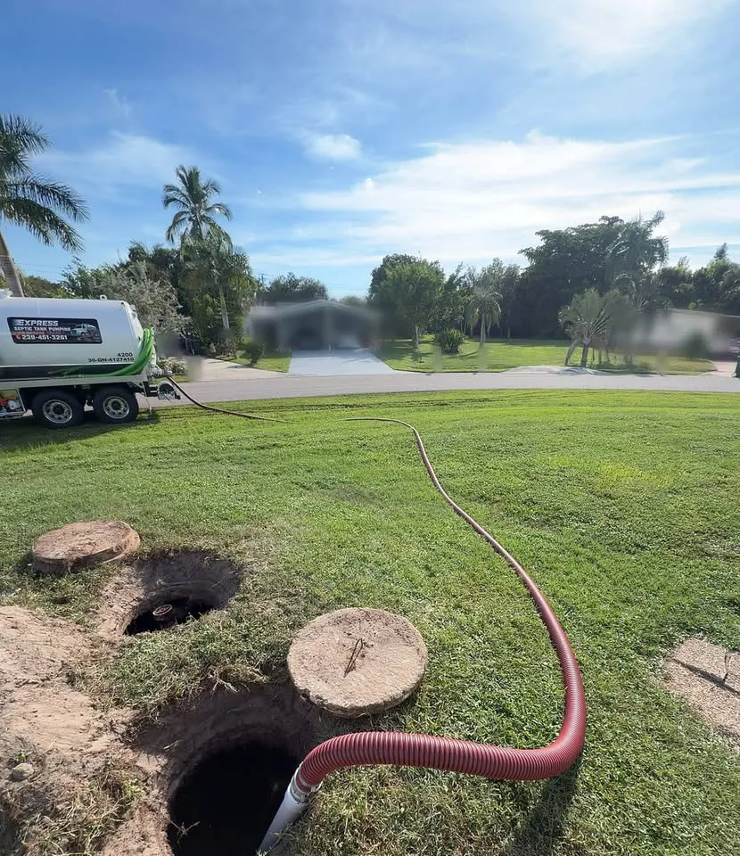

Express Septic Tank Pumping
Septic Tank Pumping in Estero, FL
Open 24 hours, 7 days · Owner-operated from Estero · Dispatch confirms every appointment by phone or text.
Quick answer
Express Septic Tank Pumping pumps septic tanks in Estero, FL. Residential pumping starts at $399.99. For a backup, call (239) 451-3261 day or night. For routine pumping, request a time online and we'll contact you to confirm.
- Services: residential and commercial septic pumping, septic repairs, drain field replacement, lift station pumping, septic tank risers, grease trap and interceptor pumping, septic inspections
- Price: residential pumping from $399.99; after-hours pumping $699.99–$799.99 by home size; septic inspection with pump-out $549.99; 6-inch risers $299.99 each; buried-lid locating/digging quoted on the call
- Hours: open 24 hours, 7 days a week
- Based in: Estero, serving Estero and the rest of Lee County
- Credentials: pumping by Express's own crew; plumbing and drain field work under a contracted Florida Certified Plumbing Contractor (who holds which credential)

Septic in Estero
Express is based in Estero, at 23357 Olde Meadowbrook Circle, so Estero homes and businesses are close to home for us.
The Village of Estero is moving properties from septic to Lee County Utilities sewer through its septic-to-sewer program, aimed in part at protecting the Estero River (Village of Estero, Septic to Sewer). Early phases include package-plant communities and the Broadway Avenue areas, and the Village treats connection as mandatory once sewer reaches a property (EsteroToday, Utilities Expansion Program update (2025)).
Until sewer reaches your street, your septic system still needs regular pumping. If you get a notice that sewer is available, ask the Village or Lee County Utilities about the connection and septic abandonment steps.
What septic pumping costs in Estero
Pricing
Residential pumping from $399.99
| Home size | Standard | Emergency or after 2:30 PM |
|---|---|---|
| 1–3 bedroom / 1–2 bath | $399.99 | $699.99 |
| 4 bedroom | $449.99 | $749.99 |
| 5 bedroom | $499.99 | $799.99 |
| Travel, jobs more than 30 minutes from our base in Estero | +$50 | |
| Locating a buried lid | Quoted on the call | |
Standard pricing covers a pump-out that starts before 2:30 PM. Emergency work, and any job that starts after 2:30 PM, is billed at the after-hours rate. A $50 travel fee applies to jobs more than 30 minutes from our base in Estero; dispatch tells you on the call if it applies. Locating a buried lid depends on the site and is quoted on the call. Call to confirm the price for your home.
- Septic inspection with pump-out $549.99
- 6-inch risers $299.99 each
If your lid is buried
Many tanks have lids buried under soil or grass. Locating and digging up a buried lid is quoted on the call. If you know where the lid is, mark it or tell us when you call.
To skip digging next time, ask about a 6-inch riser ($299.99 each). It brings the lid up to ground level.
Septic services in Estero
- Septic Tank Pumping
- Residential Septic Tank Pumping
- Commercial Septic Tank Pumping
- Septic Tank Riser Installation
- Septic Repair
- Drain Field Replacement
- Lift Station Pumping
- Grease Trap & Interceptor Pumping
- Septic Inspections
- Commercial Grease Trap Service
Signs your tank needs pumping
Slow drains, gurgling pipes, sewage odors outside, or soggy, extra-green grass over the drain field. If it's been 3 to 5 years since your last pump-out, or you don't know, it's time to call.
Book or call
Request service
I'm experiencing a backup
Don't book online. Call now and stop running water until we get there. Day or night.
Call now · (239) 451-3261Routine pumping for my home
Send a request on ServiceM8, the booking system we use. We'll contact you to confirm a time; it isn't booked until we confirm. From $399.99.
Book routine service on ServiceM8 (opens in a new tab) ↗Grease trap for a restaurant or kitchen
One-time pump-outs or a recurring schedule. Call to set it up.
Call (239) 451-3261 Grease trap service
Operated by Express Septic Tank Pumping LLC · Call (239) 451-3261 · Text BOOK
Text BOOK to (239) 451-3261 to get our online booking link. If BOOK doesn’t fill in automatically, type BOOK in the message. By texting BOOK, you agree to receive text messages from Express Septic Tank Pumping LLC about your booking request. Msg & data rates may apply. Msg frequency varies. Reply HELP for help, STOP to opt out. Consent is not a condition of purchase. See our Privacy Policy and SMS Terms.
Request service or a quote
Send us your request and we'll confirm your appointment.
Open the request formForm not showing? Use the button above. Septic backing up right now? Please call (239) 451-3261 instead. See our privacy policy and SMS terms.
Estero septic questions
How much does septic tank pumping cost in Estero?
Residential pumping with Express starts at $399.99. Standard pricing covers a pump-out that starts before 2:30 PM. Emergency work, and any job that starts after 2:30 PM, is billed at the after-hours rate. A $50 travel fee applies to jobs more than 30 minutes from our base in Estero; dispatch tells you on the call if it applies. Locating a buried lid depends on the site and is quoted on the call. Call (239) 451-3261 to confirm the price for your tank.
Is Estero switching from septic to sewer?
In parts of Estero, yes, over time. The Village of Estero is converting properties to Lee County Utilities sewer in phases. Until sewer reaches your street and you connect, keep pumping your septic tank on schedule.
How often should I pump my septic tank?
The U.S. EPA recommends pumping most household tanks every 3 to 5 years. Tank size, household size and water use change that. Pumping before Florida's summer rainy season gives the drain field more room.
How much does it cost to find and dig up a buried lid?
Locating and digging up a buried lid is quoted on the call. A riser avoids digging on future visits.
What is a septic tank riser?
A riser is an extension installed on top of the tank's access opening. It brings the lid up to ground level, so future pump-outs don't need digging. Express installs 6-inch risers for $299.99 each. Call (239) 451-3261 to confirm what your tank needs.
Do you do septic repairs?
Yes. We look at the system first, then quote the repair. Call (239) 451-3261. Work that needs a plumbing contractor's license is performed under a contracted Florida Certified Plumbing Contractor; his name, license number and a state verification link are on our drain field replacement page.
Do you pump grease traps in Estero?
Yes. We pump grease traps for restaurants and commercial kitchens, one-time or on a recurring schedule. Call (239) 451-3261 to set it up.
Can I book online?
Yes, for routine pumping. Send a request through our ServiceM8 booking page and we'll contact you to confirm a time. It isn't a confirmed appointment until we confirm. For a backup, call (239) 451-3261 day or night.
Restaurant grease traps in Estero
Kitchens around Coconut Point, Corkscrew Road, and U.S. 41 can use grease trap pumping in Estero. Which FOG schedule applies depends on whether the account is with Lee County Utilities or Bonita Springs Utilities.
Effluent filter care in Estero
Village homes still on a tank can start at septic filter cleaning in Estero. Filter care still matters while streets convert to sewer in phases.
Inlet and outlet pumping in Estero
Village homes still on a tank can read why we pump both compartments in Estero. A sewer-conversion timeline is not a reason to leave the outlet loaded.
Village habits that protect a drain field
While a street waits on sewer, what you pour, plant, and park still matters. See drain field do's and don'ts in Estero.
Nearby areas we serve
Sources: Village of Estero, Septic to Sewer; EsteroToday, Utilities Expansion Program update (2025); U.S. EPA, How to care for your septic system.
Reviews
See what customers say on Google
Our reviews are on our Google Business Profile.
Talk to Express about your tank
Call day or night for a backup. For routine pumping, ask about same-day availability.